Created: 2020-09-12 sáb 00:45
Dado Un programa \(P\), generar un programa \(P'\) que sea:
(analisis / sintesis de programas)
Considere detectar que una rama no ocurre:
int x,y,z; y:=read(file); x:= y * y; if x >= 0 then z := 1 else z:= 0
y la multiplicación abstracta \(*_\alpha : {D_\alpha}^2 \to D_\alpha\) definido por:
| \(*_\alpha\) | \([-]\) | \([+]\) |
|---|---|---|
| \([-]\) | \([+]\) | \([-]\) |
| \([+]\) | \([-]\) | \([+]\) |
y la multiplicación abstracta \(*_\alpha : {D'_\alpha}^2 \to D'_\alpha\) definido por:
| \(*_\alpha\) | \([-]\) | \([0]\) | \([+]\) |
|---|---|---|---|
| \([-]\) | \([+]\) | \([0]\) | \([-]\) |
| \([0]\) | \([0]\) | \([0]\) | \([0]\) |
| \([+]\) | \([-]\) | \([0]\) | \([+]\) |
suma abstracta \(+_\alpha : {D''_\alpha}^2 \to D''_\alpha\) definido por:
| \(+_\alpha\) | \([-]\) | \([0]\) | \([+]\) | \(\top\) |
|---|---|---|---|---|
| \([-]\) | \([-]\) | \([-]\) | \(\top\) | \(\top\) |
| \([0]\) | \([-]\) | \([0]\) | \([+]\) | \(\top\) |
| \([+]\) | \(\top\) | \([+]\) | \([+]\) | \(\top\) |
| \(\top\) | \(\top\) | \(\top\) | \(\top\) | \(\top\) |
La representación de \(\wp(D)\) por \(D_\alpha\) se expresa mediante una función (monótona) llamada función de concretización: \[\gamma : D_\alpha → \wp(D)\] tal que \(\gamma(\lambda) = d\) si \(d\) es el elemento más grande (bajo \(\supseteq\)) de \(\wp(D)\) que \(\lambda\) describe [\((\wp(D), \supseteq)\) es obviamente una retículo completo]
p.ej. en el ejemplo de los "signos", con \(D_\alpha = \{[-],[0],[+],\top \}\), \(\gamma\) viene dado por \[ \begin{align} \gamma([-]) &= \{x \in Z \arrowvert x < 0 \} \\ \gamma([0]) &= \{0\} \\ \gamma([+]) &= \{x \in Z \arrowvert x > 0\} \\ \gamma(\top) &= Z \\ \end{align} \]
También podemos definir (no estrictamente necesario) una función de abstracción (monótona) \[\alpha : \wp(D) \rightarrow D_\alpha\] \(\alpha(d) = \lambda\) si \(\lambda\) es el elemento "mínimo" de \(D_\alpha\) que describe \(d\) [bajo un orden adecuado definido en los elementos de \(D_\alpha\)]
p.ej. en el ejemplo de los "signos", \[ \begin{align} \alpha(\{1, 2, 3\}) &= [+] (no \top) \\ \alpha(\{- 1, −2, −3\}) &= [-] (no \top) \\ \alpha(\{0\}) &= [0] \\ \alpha(\{- 1, 0, 1\}) &= \top \\ \end{align} \]
| \(\gamma(\bot)\) | \(=\) | \(\emptyset\) | \(\gamma(\top)\) | \(=\) | \(Z\) | |
| \(\gamma([-])\) | \(=\) | \(\{x \in Z \arrowvert x < 0 \}\) | \(\gamma([+])\) | \(=\) | \(\{x \in Z \arrowvert x > 0 \}\) | \(\gamma([0]) = \{0\}\) |
| \(\gamma([0^-])\) | \(=\) | \(\{x \in Z \arrowvert x \leq 0 \}\) | \(\gamma([0^+])\) | \(=\) | \(\{x \in Z \arrowvert x \geq 0 \}\) |
| finito | cadena finita ascendente |
|  | |
| finito en profundidad | |
|  |